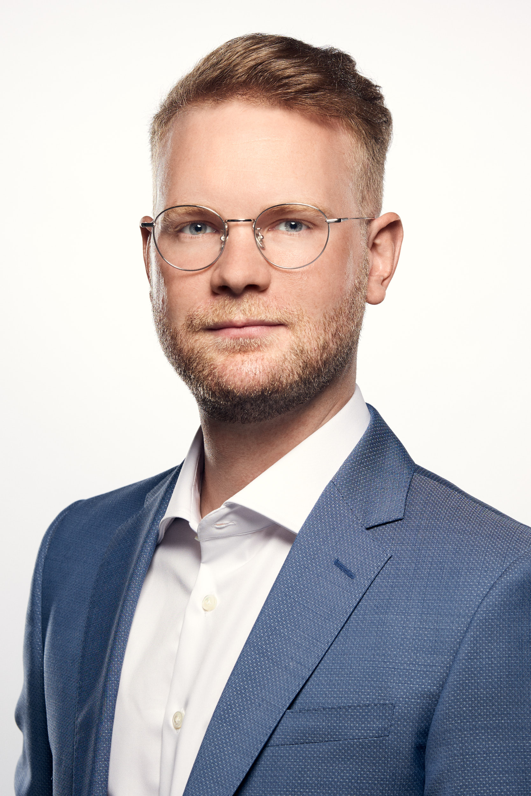

Personal details:| Name: | Sebastian Knigge |
| Academic degrees: | MSc, BSc |
| Date of birth: | 29.09.1992 |
| Since 06/2022 | Senior Associate at pwc Austria - Technology Consulting: Data & Analytics |
|
| 11/2019 - 05/2022 | AI Solution Architect at Crayon - Center of Excellence Europe | |
| 7/2015 - 12/2018 | Student Support at Raiffeisenbank International (RBI) - Department Validation/IRB Coordination | |
| 7/2015 - 5/2018 | Student Support at Raiffeisenbank International (RBI) Credit Risk Analysis - Department Analysis FI & Countries |
| 11/2019 | university degree Statistics at University of Vienna Master of Science (MSc) |
|
| 1/2019 - 5/2019 | Master program Statistical Science Statistical Science at Duke University (North Carolina) |
|
| 1/2017 | university degree Statistics at University of Vienna Bachelor of Science (BSc) |
|
| 6/2015 | university degree Business Administration at University of Vienna Bachelor of Science (BSc) |
|